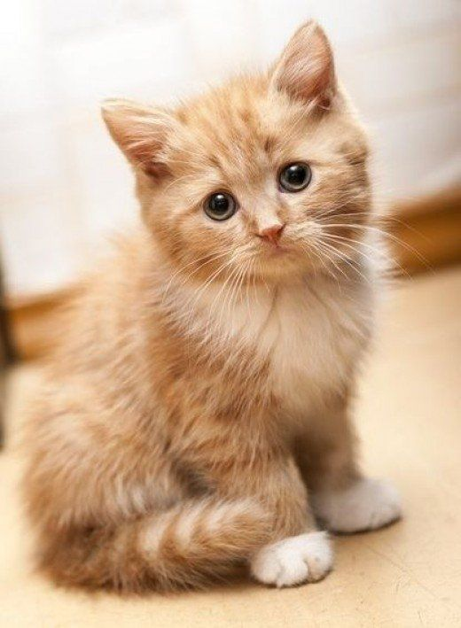
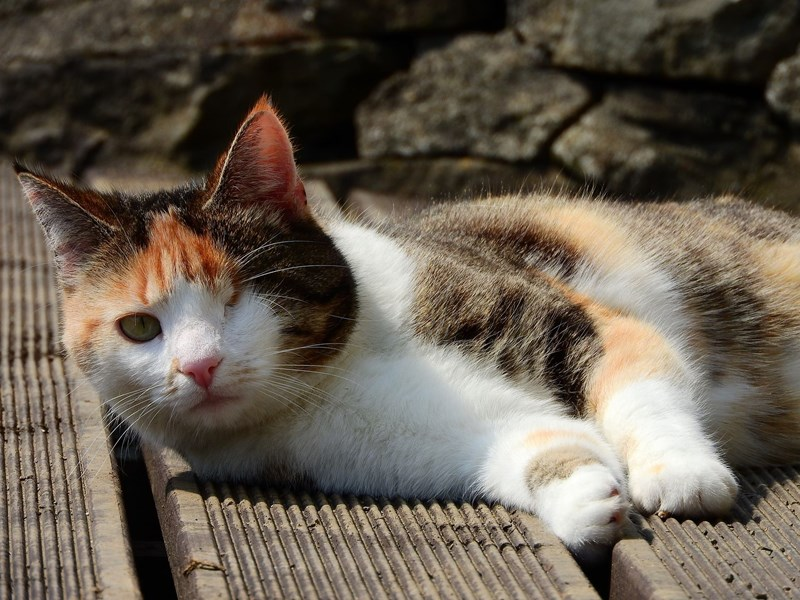
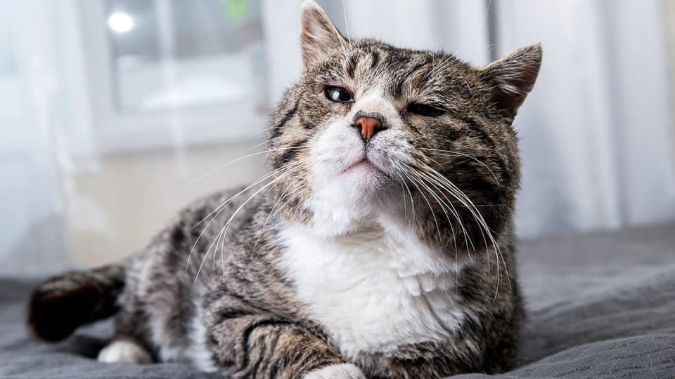
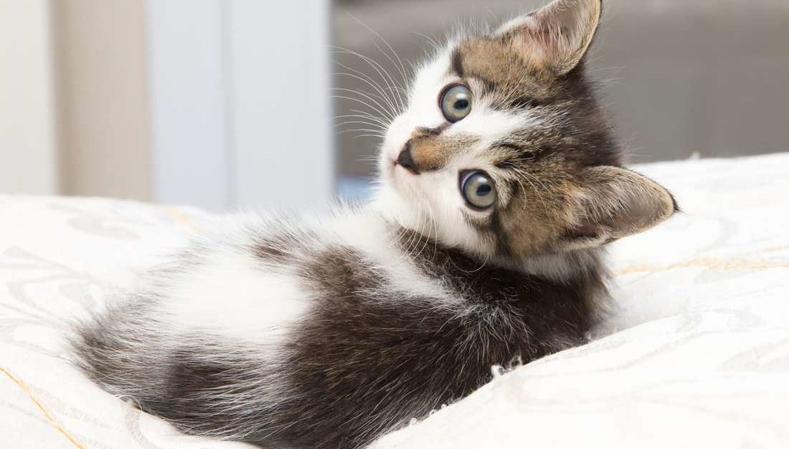
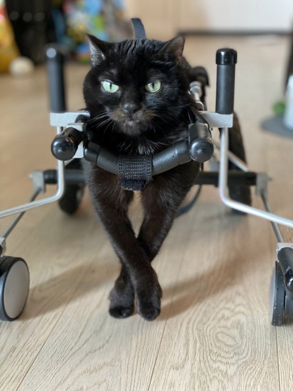

| Name |
About |
InstaPaw |
Adoption Fees |
| Mochi |
Mochi is a domestic shorthair with the cutest most kawaii anime face you most definitely have ever seen. Prepare to die from kawaii overload.
- Age: 3 years
- Likes: Rolling, cuddling, being kissed, and eating snacks
- Gender: Female
- Ideal Family: Adults with older children
- Ok with other animals? Yes
|

| $50.00 |
| Mushu |
Mushu is a tiny lil energy rocket. Looks adorable, but never stops running around! If you like parkour, this lil' dude is for you.
- Age: 7 months
- Likes: Running, climbing, talking loudly, and passing out
- Gender: Male
- Ideal Family: Families with children
- Ok with other animals? Yes
|
 |
$50.00 |
| Popeye |
Popeye is a middle aged adventurer. Loves being outdoors and climbing. Would probably smoke cigars with you if he were a human.
- Age: 5 years
- Likes: Sniffing things, rolling in the grass, catnip, sleeping on laps, adventuring in backpacks
- Gender: Male
- Ideal Family: Adults with older or no children
- Ok with other animals? No
|
 |
$30.00
Adoption Fee Reduced!
|
| Senior Pepper |
Senior Pepper is a wise old man with many years of life experience behind him. He is the grandpa everyone looks up to. He's a chill dude that can teach your youngins de way.
- Age: 11 years
- Likes: Sleeping, catching mice (when he can), drinking milk, people watching
- Gender: Male
- Ideal Family: Adults with older children
- Ok with other animals? Yes
|
 |
$30.00
Adoption Fee Reduced!
|
| Stew |
Stew is a hearty soul that will curl up in your arms and take a nice long nap. Like a slow cooker, the longer she spends time with you, the more her love for you will grow. She's loyal and precious and will follow you everywhere.
- Age: 5 months
- Likes: Eating, climbing, cuddling, and chasing bubbles
- Gender: Female
- Ideal Family: Families with children
- Ok with other animals? Yes
|
 |
$50.00 |
| Tricycle |
Tricycle is sass on wheels. Definitely a diva that expects what she desverves: the most and the best. Non-aggressive, but will not hesitate to meow at you to let you know what she needs.
- Age: 2 years
- Likes: Wheeling around, meeting new friends, drinking bottled water, and constantly asking for her crown
- Gender: Female
- Ideal Family: Adults with older or no children
- Ok with other animals? Yes
|
 |
$80.00
Special Needs
|